Démarche Réflexive & Compétences
Suivi complet de mes 41 Apprentissages Critiques (AC) selon l'évolution de posture attendue entre la 1re année et la 2e année.
Compétence Administrer — Niveau 2 : Administrer un réseau
CE1.01 à CE1.05 • Conception d'infrastructures, virtualisation, services avancés et réseaux opérateurs
Fonctionné : Convergence automatique des tables de routage sous OSPF multi-aires et bascule redondante HSRP en moins de 3 secondes lors d'une coupure de lien.
Non fonctionné initialement : Redistribution des routes entre OSPF et BGP incomplète sur le routeur de bordure.
J'avais oublié le mot-clé subnets lors de la redistribution vers OSPF (ce qui ne redistribuait que les réseaux classful) ainsi que l'aire de transit Area 0 sur un routeur intermédiaire. Diagnostiqué via show ip ospf neighbor et show ip route.
J'ai privilégié OSPF à RIPv2 car OSPF s'appuie sur le coût réel des liens (bande passante) et non sur le simple nombre de sauts, évitant ainsi d'emprunter un lien lent en cas de topologie maillée.
En BUT 1 (AC11.03), je saisissais des routes statiques une à une. En BUT 2, je conçois des domaines de routage scalables capables de s'auto-réparer sans intervention humaine, tout en sécurisant les adjacences par authentification MD5/SHA.
Traces ciblées (cliquez pour agrandir) :
Topologie réseau multi-aires sous Packet Tracer / GNS3 avec liens redondants

Validation des adjacences OSPF (show ip ospf neighbor) et bascule HSRP en CLI

Fonctionné : Priorisation des flux voix RTP (marquage DSCP EF) éliminant la gigue lors d'une saturation simulée du lien par transfert FTP, et blocage d'équipements non autorisés via Port-Security.
Non fonctionné initialement : Perte d'accès des postes légitimes sur un port commutateur.
J'avais limité le switchport port-security maximum 1 sur un port raccordant un téléphone IP Cisco chaîné à un PC (qui nécessite 2 adresses MAC distinctes : VLAN Voice et VLAN Data), déclenchant la mise en état err-disabled du port.
J'ai combiné une file prioritaire stricte (LLQ) pour la ToIP et activé DHCP Snooping + Dynamic ARP Inspection afin de bloquer les attaques par usurpation de serveur DHCP ou ARP Spoofing dès la couche 2.
Alors qu'en BUT 1 mon objectif était uniquement que les trames circulent entre VLANs, j'intègre désormais la qualité de service (bande passante garantie) et la défense contre les menaces internes sur les ports d'accès.
Traces ciblées (cliquez pour agrandir) :
Configuration du marquage DSCP EF et des files prioritaires LLQ pour la ToIP

Activation de Port-Security, DHCP Snooping et Dynamic ARP Inspection sur commutateur

Fonctionné : Déploiement rapide de microservices (Nginx, PostgreSQL, Portainer, n8n) via Docker Compose sur mon serveur Linux, et hébergement de VMs isolées sous VMware ESXi.
Non fonctionné initialement : Réinitialisation d'une base de données après mise à jour d'un conteneur.
Oubli de la déclaration d'un volume persistant dans le fichier docker-compose.yml : les données étaient stockées dans la couche éphémère du conteneur et ont été effacées lors du docker compose down.
J'ai choisi la conteneurisation Docker pour les services applicatifs légers (faible empreinte RAM/CPU sur mon serveur) et réservé l'hyperviseur ESXi aux environnements nécessitant un noyau OS distinct (ex: Windows Server AD).
En BUT 1 (AC11.06), j'installais manuellement des OS via ISO sous VirtualBox. En BUT 2, je déploie des environnements reproductibles en quelques secondes grâce à des fichiers déclaratifs YAML et des modèles de machines virtuelles.
Traces ciblées (cliquez pour agrandir) :
Architecture multi-conteneurs déclarative (docker-compose.yml) sur serveur Linux

Supervision des instances actives sous Portainer / hyperviseur VMware ESXi

Fonctionné : Mise en place d'un couple DNS Primaire/Secondaire (Bind9), d'un relais DHCP inter-VLAN (ip helper-address) et d'un reverse proxy HTTPS centralisé.
Non fonctionné initialement : Non-réplication des nouveaux enregistrements DNS vers le serveur secondaire.
J'avais modifié les enregistrements A dans le fichier de zone du serveur primaire sans incrémenter le numéro de série (Serial) dans l'enregistrement SOA : le serveur secondaire considérait sa zone toujours à jour.
J'ai centralisé les services DHCP et DNS sur des serveurs dédiés plutôt que sur les routeurs, et sécurisé les transferts de zone (AXFR) avec une clé cryptographique TSIG pour éviter l'espionnage de la cartographie interne.
Contrairement au BUT 1 où chaque service fonctionnait sur une machine unique, j'applique désormais le principe de haute disponibilité (redondance DNS/DHCP) indispensable en production.
Traces ciblées (cliquez pour agrandir) :
Fichier de zone DNS Bind9 avec numéro de série SOA et signature TSIG

Test de résolution DNS et allocation d'adresses via relais DHCP inter-VLAN

Fonctionné : Interconnexion de 4 Systèmes Autonomes (AS) distincts via eBGP, transit interne via iBGP et ingénierie de trafic par manipulation de l'attribut local-preference.
Non fonctionné initialement : Paquets routés vers un prochain saut (Next-Hop) inaccessible en iBGP.
En iBGP, l'adresse IP du prochain saut n'est pas modifiée par défaut lors de l'annonce d'un préfixe externe. J'ai corrigé cette erreur en configurant la commande neighbor ... next-hop-self sur les routeurs de bordure et en validant les route-maps.
J'ai utilisé l'attribut local-preference (attribut bien connu discrétionnaire) plutôt que le MED pour influencer de manière déterministe le chemin de sortie préférentiel de tout mon AS vers un opérateur de transit.
Cette compétence m'a fait changer d'échelle : je comprends désormais comment les opérateurs (Tier 1/2/3), les points d'échange (IXP) et le protocole BGP acheminent le trafic mondial selon des politiques économiques et techniques.
Traces ciblées (cliquez pour agrandir) :
Interconnexion multi-AS sous eBGP/iBGP et ingénierie de trafic (local-preference)

Table BGP (show ip bgp) validant le choix des meilleurs chemins et next-hop-self

Fonctionné : Livraison dans les temps d'une maquette d'infrastructure complète grâce à une répartition claire des pôles (cœur réseau, serveurs Linux/AD, sécurité/filtrage).
Non fonctionné initialement : Chevauchement de plages IP entre deux sous-groupes lors de l'intégration finale.
Nous avions commencé les configurations en parallèle avant d'avoir figé un document unique de plan d'adressage IP et de nommage des équipements, ce qui a imposé une reprise de plusieurs fichiers de configuration.
Nous avons mis en place un dépôt GitLab centralisé avec une branche par fonctionnalité et un fichier de spécifications d'architecture validé collectivement avant toute phase de déploiement.
J'ai développé une posture professionnelle : savoir communiquer mes blocages techniques tôt, documenter mes configurations pour mes coéquipiers et intégrer les briques de chacun dans un système cohérent.
Traces ciblées (cliquez pour agrandir) :
Plan d'adressage IP et matrice d'architecture partagés avant déploiement

Historique des branches, commits et Merge Requests de l'équipe sur GitLab

Compétence Connecter — Niveau 2 : Maîtriser les solutions de connexion
CE2.01 à CE2.04 • Transmissions complexes, accès distants, réseaux opérateurs et cahier des charges RT
Fonctionné : Simulation et caractérisation spectrale des codages en ligne (NRZ, RZ, Manchester) ainsi que des modulations numériques (ASK, PSK, QAM) avec mesure du rapport signal sur bruit (SNR).
Non fonctionné initialement : Spectre fréquentiel illisible sur l'analyseur.
Mauvais réglage du temps d'échantillonnage (Sample Time) et de la résolution fréquentielle sur le bloc Spectrum Analyzer en simulation, masquant les raies discrètes caractéristiques du code RZ.
J'ai retenu le codage Manchester pour la liaison étudiée car, bien qu'il exige une bande passante double par rapport au NRZ, il supprime la composante continue (DC) et garantit une transition à chaque bit pour synchroniser l'horloge du récepteur.
En BUT 1 (AC12.01), je relevais l'amplitude d'un signal sinusoïdal à l'oscilloscope. En BUT 2, je maîtrise le compromis débit / bande passante / immunité au bruit propre aux systèmes de télécommunications modernes.
Traces ciblées (cliquez pour agrandir) :
Modélisation des codages en ligne NRZ, RZ et Manchester sous simulateur

Analyse spectrale (Spectrum Analyzer) mettant en évidence l'occupation fréquentielle et la composante continue

Fonctionné : Déploiement d'un serveur VPN d'accès distant (OpenVPN avec authentification par certificats TLS et WireGuard) permettant l'administration sécurisée de mon Homelab et des ressources internes.
Non fonctionné initialement : Échec de la poignée de main TLS client/serveur.
L'horloge système du serveur n'était pas synchronisée via NTP, ce qui rendait la date de début de validité du certificat X.509 généré « dans le futur » aux yeux du client VPN. Corrigé par l'activation de systemd-timesyncd.
J'ai banni toute exposition directe des ports d'administration (SSH, Portainer, PostgreSQL) sur Internet au profit d'un point d'entrée unique VPN chiffré avec authentification mutuelle par clés asymétriques.
J'ai compris comment étendre le périmètre de confiance d'un réseau d'entreprise à des télétravailleurs ou administrateurs nomades sans compromettre l'intégrité des flux.
Traces ciblées (cliquez pour agrandir) :
Configuration du serveur VPN (OpenVPN / WireGuard) avec authentification par certificats TLS

Journal de connexion réussie et tunnel chiffré actif depuis un poste nomade

Fonctionné : Interconnexion chiffrée entre deux sites distants (siège et agence) via un tunnel GRE over IPsec (IKEv2, ESP AES-256) transportant le routage dynamique OSPF.
Non fonctionné initialement : Lenteurs extrêmes et blocage des pages Web à travers le tunnel.
L'ajout des en-têtes GRE + IPsec dépassait le MTU standard de 1500 octets, provoquant une fragmentation IP massive et la perte des paquets ayant le bit DF (Don't Fragment) actif. Résolu via ip mtu 1400 et ip tcp adjust-mss 1360.
J'ai encapsulé GRE dans IPsec car IPsec natif ne supporte pas le trafic multicast nécessaire aux paquets Hello d'OSPF, tandis que GRE seul ne chiffre pas les données.
Cette mise en œuvre m'a permis d'appréhender les problématiques réelles de transport WAN : coût des liaisons opérateurs, surcharge protocolaire (overhead) et chiffrement de bout en bout.
Traces ciblées (cliquez pour agrandir) :
Configuration du tunnel GRE over IPsec (IKEv2 / AES-256) et ajustement du MTU/MSS

Capture Wireshark confirmant l'encapsulation et le chiffrement des paquets ESP sur le lien WAN

Fonctionné : Dimensionnement d'une architecture FTTH GPON (OLT, coupleurs optiques passifs, ONT), réalisation de soudures optiques et mesures de réflectométrie (OTDR).
Non fonctionné initialement : Atténuation excessive mesurée sur un brin monomode.
Un clivage imparfait de la fibre avant l'épissure par fusion et une poussière sur le connecteur SC/APC avaient généré une perte d'insertion de 3,5 dB au lieu de 0,1 dB. Corrigé par nettoyage systématique au stylo optique et reprise de la soudure.
J'ai sélectionné des connecteurs APC (polissage incliné à 8°) plutôt que UPC afin de minimiser la réflexion arrière (Return Loss) indispensable au bon fonctionnement des lasers GPON en multiplexage bidirectionnel (WDM).
En BUT 1 (AC12.03), je sertissais des câbles Ethernet RJ45 sur 100 mètres maximum. En BUT 2, je maîtrise les contraintes physiques et optiques des réseaux d'accès très haut débit à l'échelle d'une ville.
Traces ciblées (cliquez pour agrandir) :
Synoptique d'architecture FTTH GPON (OLT, coupleur optique passif, ONT)

Courbe de réflectométrie (OTDR) et contrôle d'atténuation après soudure optique

Fonctionné : Reformulation des besoins d'une PME fictive, levée des ambiguïtés techniques (volumétrie de flux, RTO/RPO souhaités, contraintes de mobilité) et rédaction d'une proposition d'architecture argumentée.
Non fonctionné initialement : Architecture proposée trop coûteuse.
J'avais dimensionné des commutateurs de cœur redondants de gamme entreprise sur l'ensemble des étages sans avoir questionné le client sur la criticité réelle des postes administratifs standards, faisant exploser le budget matériel.
J'ai restructuré l'offre en deux scénarios (Nominal vs Haute Disponibilité) afin d'éclairer le décideur sur le compromis entre coût d'investissement (CAPEX) et continuité d'activité.
En BUT 1, je suivais des consignes pas à pas. En BUT 2, j'ai acquis le recul nécessaire pour challenger un cahier des charges incomplet et traduire des objectifs métiers en spécifications techniques précises.
Traces ciblées (cliquez pour agrandir) :
Tableau comparatif des scénarios techniques (Nominal vs Haute Disponibilité)

Extrait du Dossier d'Architecture Technique (DAT) justifiant le dimensionnement retenu

Compétence Programmer — Niveau 2 : Développer une application R&T
CE3.01 à CE3.05 • Automatisation NetDevOps, applications communicantes client/serveur et bases de données
Fonctionné : Développement de scripts Python (Paramiko/Netmiko) pour sauvegarder automatiquement les configurations Cisco via SSH et création de workflows n8n pour la veille sécurité et les notifications Discord.
Non fonctionné initialement : Arrêt brutal du script dès qu'un équipement ne répondait pas.
Absence de gestion d'exceptions réseau (TimeoutError, AuthenticationException) et stockage initial de jetons API en dur dans le code. Corrigé par des blocs try/except, la journalisation dans un fichier log et l'usage de variables d'environnement .env.
J'ai choisi Python pour l'interaction multi-plateforme avec les équipements réseau via SSH/API REST, et Bash/Cron pour les tâches locales de maintenance et de sauvegarde sur mon serveur Linux.
En BUT 1 (AC13.03), mes programmes résolvaient des exercices mathématiques. En BUT 2, mes scripts interagissent directement avec le système d'exploitation et les équipements réseau pour éliminer les tâches répétitives.
Traces ciblées (cliquez pour agrandir) :
Script Python (Netmiko/Paramiko) de sauvegarde automatisée des configurations Cisco

Pipeline d'automatisation n8n (webhooks, parsing JSON et alertes Discord)

Fonctionné : Conception et développement d'applications Web complètes (backend Flask en Python et interface responsive pour mon projet Nos Escapades et ce portfolio) respectant le cahier des charges fonctionnel.
Non fonctionné initialement : Fichier principal Python monolithique difficile à maintenir.
J'avais regroupé toutes les routes, requêtes SQL et traitements dans un seul fichier app.py, rendant le débogage complexe. J'ai refactorisé l'architecture en séparant les Blueprints, les modèles de données et les vues Jinja2.
J'ai sélectionné le micro-framework Flask pour sa légèreté et sa parfaite intégration avec mes scripts Python d'administration et mes conteneurs Docker.
En BUT 1 (AC13.04), je maîtrisais uniquement l'intégration Front-End statique. En BUT 2, je conçois l'architecture complète (routage serveur, gestion de sessions, API et interface responsive).
Traces ciblées (cliquez pour agrandir) :
Arborescence modulaire du backend Python Flask (Blueprints, routes et templates)

Interface Web responsive de l'application « Nos Escapades » en exécution

Fonctionné : Programmation d'une architecture client/serveur en Python via le module socket (TCP) capable de gérer plusieurs clients simultanés pour l'échange de commandes de supervision.
Non fonctionné initialement : Blocage du serveur dès qu'un premier client restait connecté.
L'appel conn.accept() et conn.recv() s'exécutait dans un thread unique séquentiel, et les messages longs étaient parfois tronqués. J'ai résolu ce problème en dédiant un thread (threading.Thread) par client et en définissant un délimiteur de trame JSON.
J'ai opté pour le protocole TCP (mode connecté) plutôt qu'UDP afin de garantir l'acquittement, l'ordre d'arrivée et l'intégrité des commandes d'administration transmises.
Cette compétence fait le lien direct entre le réseau et le code : je sais désormais ouvrir des sockets, sérialiser des données en JSON/octets et gérer les états de connexion au niveau applicatif.
Traces ciblées (cliquez pour agrandir) :
Code source du serveur TCP multi-threadé en Python (socket & threading)

Capture d'échanges client/serveur en terminal et validation des trames JSON sous Wireshark

Fonctionné : Installation, configuration et administration d'un SGBD PostgreSQL et d'une stack Supabase auto-hébergée sur mon serveur Linux, avec gestion des rôles, schémas relationnels et sauvegardes automatisées.
Non fonctionné initialement : Connexions distantes refusées par le serveur de base de données.
Par défaut, PostgreSQL n'écoutait que sur localhost et le fichier pg_hba.conf n'autorisait pas le sous-réseau Docker interne. J'ai ajusté listen_addresses et restreint pg_hba.conf aux seules IP des conteneurs applicatifs.
J'ai choisi PostgreSQL pour sa robustesse ACID, le support natif des types JSONB et la possibilité d'automatiser des sauvegardes logiques quotidiennes via pg_dump.
En BUT 1 (AC13.05), je manipulais des fichiers CSV en mémoire avec Python. En BUT 2, j'administre un moteur de base de données relationnel sécurisé, pérenne et multi-utilisateurs.
Traces ciblées (cliquez pour agrandir) :
Schéma relationnel et administration des tables sous PostgreSQL / Supabase

Configuration des règles d'accès (pg_hba.conf) et script de sauvegarde pg_dump

Fonctionné : Interfaçage dynamique entre mes applications Web (Flask / JS) et PostgreSQL/Supabase via opérations CRUD sécurisées et consommation d'API REST externes.
Non fonctionné initialement : Erreurs de politique CORS lors des appels JavaScript asynchrones.
Les requêtes fetch() depuis le navigateur étaient bloquées par l'API car l'en-tête Access-Control-Allow-Origin n'était pas configuré. J'ai également remplacé toutes les concaténations de chaînes SQL par des requêtes paramétrées pour éliminer tout risque d'injection SQL.
J'ai implémenté des politiques de sécurité au niveau des lignes (Row Level Security sur Supabase) et des jetons JWT afin de contrôler strictement quelles données un utilisateur authentifié peut lire ou modifier.
J'ai acquis les réflexes de sécurité applicative (protection contre les injections SQL, gestion des secrets et contrôle d'accès aux API) indispensables au développement d'outils R&T fiables.
Traces ciblées (cliquez pour agrandir) :
Extrait de code utilisant des requêtes SQL paramétrées (protection contre les injections SQL)

Test d'appel API REST asynchrone (fetch) avec jeton JWT et politiques RLS

Compétence Sécuriser — Parcours Cybersécurité (BUT 2)
CE4.01 à CE4.05 • Sensibiliser aux vulnérabilités d'un système d'information et aux remédiations possibles
Fonctionné : Mise en conformité d'un parc Linux/Windows Server selon le guide d'hygiène informatique de l'ANSSI : séparation des comptes d'administration, politique de complexité des mots de passe et désactivation des protocoles obsolètes (SMBv1, Telnet).
Non fonctionné initialement : Blocage d'une tâche planifiée suite au durcissement.
L'application d'une GPO de verrouillage de compte trop stricte (3 tentatives) a bloqué un ancien service utilisant des identifiants mis en cache. J'ai corrigé cela en créant un compte de service dédié à privilèges restreints (gMSA).
J'ai appliqué le principe de défense en profondeur et de moindre privilège afin qu'une compromission d'un poste utilisateur ne permette pas une élévation de privilèges immédiate vers le domaine.
En BUT 1, la sécurité était abordée de façon ponctuelle. En BUT 2, je m'appuie systématiquement sur les référentiels reconnus (ANSSI, CIS Benchmarks) pour arbitrer entre sécurité et ergonomie utilisateur.
Traces ciblées (cliquez pour agrandir) :
Audit de conformité et application des recommandations du guide d'hygiène ANSSI

Stratégie de groupe (GPO) de durcissement des comptes et désactivation de SMBv1

Fonctionné : Cloisonnement d'une architecture en 3 zones (LAN interne, DMZ publique, WAN) via pare-feu à états (iptables / nftables) et filtrage par ACLs étendues sur les routeurs Cisco.
Non fonctionné initialement : Coupure de ma propre session SSH d'administration.
J'avais passé la politique par défaut de la chaîne INPUT à DROP avant d'autoriser les connexions déjà établies (-m conntrack --ctstate ESTABLISHED,RELATED -j ACCEPT). J'ai appris à toujours valider les règles avec un temporisateur de retour arrière.
J'ai interdit tout flux initié depuis la DMZ vers le LAN interne : en cas de piratage du serveur Web exposé en DMZ, l'attaquant reste piégé dans cette zone isolée.
Le VLAN de BUT 1 séparait les domaines de diffusion ; le pare-feu stateful de BUT 2 contrôle désormais finement les états de session, les ports et les directions de chaque flux.
Traces ciblées (cliquez pour agrandir) :
Schéma de cloisonnement en 3 zones (LAN interne, DMZ publique, WAN)

Jeu de règles pare-feu stateful (iptables / nftables) et ACLs étendues Cisco

Fonctionné : Durcissement complet des services exposés : SSH (authentification par clé Ed25519 uniquement, PermitRootLogin no, bannissement automatique avec Fail2ban) et serveur Web (masquage des versions, en-têtes HSTS et CSP).
Non fonctionné initialement : Blocage de ressources CSS/JS légitimes sur le site Web.
Ma politique Content-Security-Policy (CSP) était trop restrictive (default-src 'self') et bloquait l'import des polices Google Fonts et des icônes Bootstrap CDN. J'ai affiné les directives style-src et font-src.
J'ai couplé Fail2ban aux journaux d'authentification (/var/log/auth.log) afin de neutraliser automatiquement les robots effectuant des attaques par force brute sur les services distants.
En BUT 1, un service était validé dès qu'il répondait sur son port. En BUT 2, je réduis systématiquement sa surface d'attaque et vérifie sa résistance face aux tentatives d'abus.
Traces ciblées (cliquez pour agrandir) :
Configuration SSH durcie (sshd_config : clés Ed25519, PermitRootLogin no) et règles Fail2ban

Validation des en-têtes de sécurité HTTP (HSTS, CSP) sur le serveur Web

Fonctionné : Déploiement d'une Autorité de Certification (PKI) interne avec OpenSSL, émission de certificats X.509 signés pour sécuriser les échanges internes en HTTPS/TLS 1.3 et vérification d'intégrité par empreintes SHA-256.
Non fonctionné initialement : Alerte de sécurité navigateur sur le certificat serveur.
J'avais renseigné le nom de domaine uniquement dans le champ Common Name (CN) sans configurer l'extension Subject Alternative Name (SAN), désormais exigée par les navigateurs modernes pour valider l'identité d'un serveur.
J'ai articulé chiffrement asymétrique (RSA/ECDSA pour l'authentification et l'échange de clés), chiffrement symétrique (AES-256-GCM pour la rapidité sur les flux de données) et hachage avec sel (Argon2/bcrypt pour les mots de passe).
Je sais désormais associer le bon mécanisme cryptographique à chaque objectif de sécurité : confidentialité, intégrité, authentification et non-répudiation.
Traces ciblées (cliquez pour agrandir) :
Génération d'une Autorité de Certification (PKI) interne et d'un certificat X.509 avec SAN via OpenSSL

Inspection du certificat TLS 1.3 et de la suite cryptographique AES-256-GCM dans le navigateur

Fonctionné : Reproduction contrôlée en environnement isolé (sandbox) d'attaques réseau (ARP Spoofing, DHCP Starvation, attaque par dictionnaire) et Web (SQLi, XSS) afin d'observer leurs traces réseau et de valider les contre-mesures.
Non fonctionné initialement : Saturation du commutateur virtuel lors d'un test d'inondation MAC.
J'avais lancé un script de test sans limiter le débit d'envoi des trames forgées, paralysant l'hyperviseur de TP. J'ai appris à calibrer mes tests et à isoler strictement mes maquettes sur un réseau virtuel fermé (Host-Only).
Comprendre le fonctionnement interne d'une attaque (ex: empoisonnement du cache ARP) m'a permis de démontrer concrètement l'efficacité des protections matérielles comme le Dynamic ARP Inspection.
Cette double lecture (attaquant / défenseur) me permet d'identifier rapidement les vecteurs d'exploitation probables lors de l'analyse d'une architecture réseau ou applicative.
Traces ciblées (cliquez pour agrandir) :
Capture Wireshark d'une attaque par empoisonnement ARP (ARP Spoofing) en environnement isolé

Journal de blocage prouvant l'efficacité de la contre-mesure (Dynamic ARP Inspection)

Fonctionné : Exploitation directe des bulletins de vulnérabilités internationaux (NVD/CVE), des RFC protocolaires et de la documentation officielle Cisco/Linux en anglais, complétée par mon pipeline de veille automatisée.
Non fonctionné initialement : Mauvaise appréciation du périmètre d'une faille critique.
Lors de la lecture d'un avis de sécurité en anglais, j'avais confondu le prérequis d'exploitation locale (Attack Vector: Local) avec une exploitation à distance (Network). Une lecture attentive de la matrice CVSS v3.1 m'a permis de rectifier l'analyse de risque.
En cybersécurité, les correctifs (patches) et indicateurs de compromission (IoC) paraissent d'abord en anglais : lire directement les sources primaires garantit une réactivité maximale sans perte d'information liée aux traductions.
L'anglais technique est devenu mon outil de travail quotidien pour déboguer des configurations complexes et assurer une veille cybersécurité fiable.
Traces ciblées (cliquez pour agrandir) :
Extrait annoté d'un bulletin de vulnérabilité officiel (NVD / CVE) et analyse du score CVSS

Synthèse technique rédigée à partir de la documentation constructeur en anglais

Compétence Surveiller — Parcours Cybersécurité (BUT 2)
CE5.01 à CE5.06 • Prendre en main les outils de surveillance et de test du système d'information
Fonctionné : Déploiement de l'antivirus open-source ClamAV avec mise à jour automatique des bases de signatures (freshclam), analyses planifiées des répertoires exposés et restriction d'exécution des scripts.
Non fonctionné initialement : Faux positifs sur des outils d'administration internes.
Une règle heuristique trop sensible avait placé en quarantaine un script PowerShell d'administration légitime non signé. J'ai résolu ce blocage en signant numériquement nos scripts internes via notre PKI et en configurant des exclusions ciblées par empreinte SHA-256.
La détection par signatures ne suffisant pas face aux malwares polymorphes ou rançongiciels, j'ai complété le dispositif par le contrôle d'exécution des binaires et la règle de sauvegarde 3-2-1 déconnectée.
J'ai compris que la lutte contre les codes malveillants repose sur l'articulation entre prévention (mises à jour, moindre privilège), détection (analyses automatisées, logs) et résilience (sauvegardes saines).
Traces ciblées (cliquez pour agrandir) :
Configuration des analyses planifiées ClamAV et mise à jour des signatures (freshclam)

Rapport d'analyse antivirus et politique de restriction d'exécution / sauvegarde 3-2-1

Fonctionné : Cartographie précise des services actifs et de leurs versions via Nmap (scripts NSE), énumération de répertoires Web (Gobuster) et exploitation contrôlée de vulnérabilités connues sur une maquette d'audit.
Non fonctionné initialement : Crash d'un service cible durant la phase de scan.
J'avais lancé un scan SYN trop agressif (nmap -sV -T5) sur une machine cible légère, saturant sa pile TCP et provoquant un déni de service involontaire. J'ai ajusté la temporisation à -T3 et ciblé les ports pertinents.
J'ai suivi une méthodologie structurée en 4 étapes (reconnaissance, énumération, exploitation maîtrisée, rapport de remédiation) en respectant strictement le périmètre d'autorisation défini par le cadre légal.
En BUT 1 (AC11.05), j'utilisais Wireshark pour diagnostiquer une panne de connectivité. En BUT 2, je maîtrise les outils d'audit offensif pour évaluer objectivement la robustesse d'un SI et prioriser les correctifs.
Traces ciblées (cliquez pour agrandir) :
Cartographie des ports ouverts et énumération des versions de services avec Nmap (-sV)

Extrait du rapport d'audit détaillant les vulnérabilités détectées et les remédiations associées

Compétence Administrer — Niveau 1 : Assister l'administrateur du réseau
Électricité, systèmes numériques, configuration LAN, systèmes d'exploitation et diagnostic
J'ai réalisé des montages de circuits électriques sur platines d'essais, effectué des mesures avec des multimètres et vérifié expérimentalement les lois de Kirchhoff (mailles et nœuds) ainsi que la loi d'Ohm.
En TP, j'ai câblé des résistances en série et en parallèle alimentées par des générateurs de tension continue, puis j'ai consigné et comparé les valeurs théoriques calculées aux valeurs mesurées.
Pour comprendre la couche physique des réseaux (couche 1 du modèle OSI) et savoir comment le signal électrique transite dans les câbles (PoE, signaux binaires).
La manipulation des outils de mesure pour éviter les courts-circuits et bien distinguer le branchement en série (ampèremètre) du branchement en parallèle (voltmètre).
J'ai validé la théorie par la pratique et compris l'importance de l'atténuation et de la dissipation électrique dans un support physique.
Modéliser systématiquement le circuit sur un simulateur comme LTspice avant de passer au câblage réel pour anticiper les résultats.
Traces ciblées :
Schéma de montage électrique
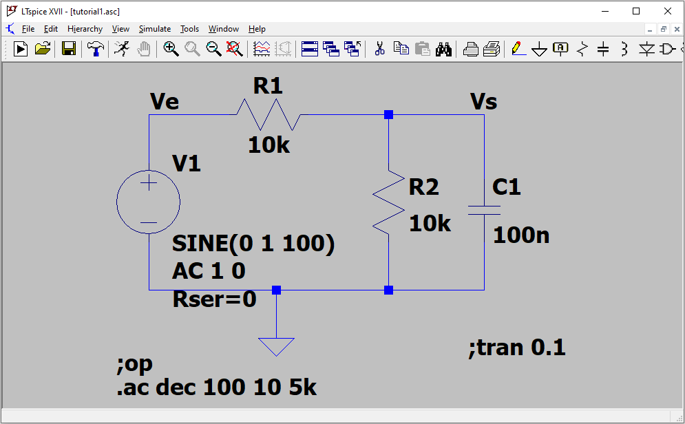
Relevé de mesures et calculs
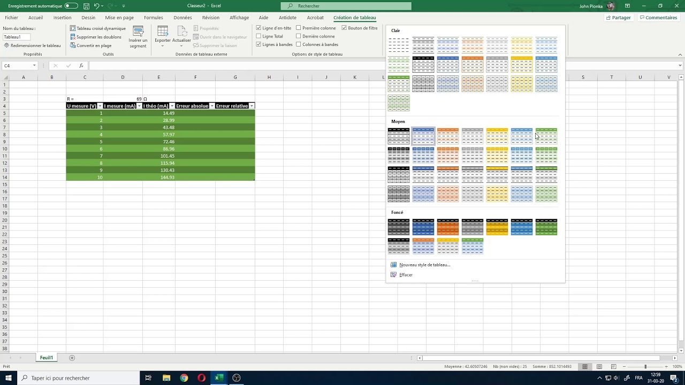
J'ai étudié le fonctionnement interne d'un processeur, réalisé des conversions de bases (binaire, hexadécimal) et conçu des circuits de logique combinatoire (portes logiques, tables de vérité).
Par des exercices d'algèbre de Boole, des simplifications de tableaux de Karnaugh et l'utilisation du simulateur logique Logisim pour recréer des additionneurs binaires.
Pour comprendre comment un équipement réseau traite l'information au niveau matériel et comment les masques de sous-réseaux IPv4/IPv6 sont calculés mathématiquement.
L'abstraction mathématique de l'algèbre de Boole et la méthode de Karnaugh pour simplifier les équations logiques complexes.
Une vision claire de la traduction entre données binaires et impulsions physiques, facilitant le calcul mental de masques CIDR.
Utiliser davantage d'outils interactifs pour automatiser l'entraînement aux conversions binaires/hexadécimales.
Traces ciblées :
Simplification par tableau de Karnaugh
Simulation de circuit sous Logisim
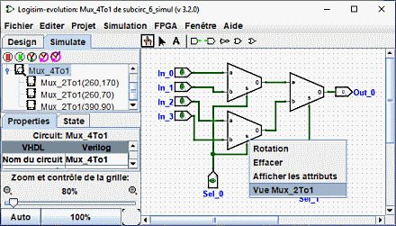
J'ai configuré des commutateurs et routeurs Cisco : création de VLANs, liens Trunk 802.1Q, routage inter-VLAN (Router-on-a-Stick) et définition de routes statiques.
J'ai d'abord simulé la topologie sur Cisco Packet Tracer, puis j'ai déployé les commandes CLI (IOS Cisco) sur le matériel physique en baie de brassage via un câble console.
Pour segmenter un réseau d'entreprise, isoler les différents services (RH, Production, Serveurs) et contrôler les communications entre eux.
Mémoriser l'arborescence des modes de commandes Cisco (utilisateur, privilégié, configuration globale) et diagnostiquer les erreurs sur les ports Trunk.
La logique d'acheminement des trames MAC (couche 2) et des paquets IP (couche 3), ainsi que la rigueur de la documentation réseau.
Sauvegarder mes configurations (copy run start) beaucoup plus régulièrement lors des TP sur matériel réel.
Traces ciblées :
Topologie réseau sous Cisco Packet Tracer
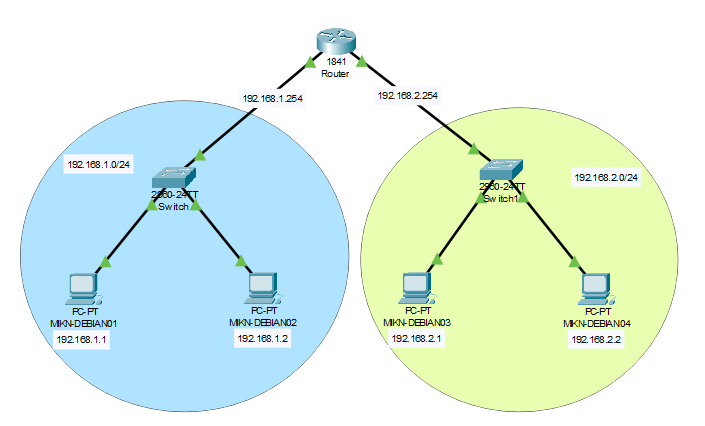
Configuration VLAN en CLI Cisco
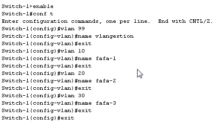
J'ai conçu et administré une infrastructure centralisée sous Windows Server : création d'un domaine Active Directory, organisation d'OU, gestion de partages NTFS et automatisation des comptes en PowerShell.
Via la console Utilisateurs et ordinateurs Active Directory, les GPO, la gestion des permissions NTFS et les cmdlets PowerShell New-ADUser et icacls.
Pour centraliser l'authentification des utilisateurs, sécuriser l'accès aux fichiers selon le moindre privilège et industrialiser la création des comptes.
Comprendre que la permission effective résultante est la plus restrictive entre le partage réseau et les droits NTFS.
La complémentarité entre administration graphique et automatisation par scripts PowerShell pour gagner en fiabilité.
Améliorer le script PowerShell pour importer directement les comptes à partir d'un fichier CSV fourni par les RH.
Traces ciblées :
Organisation Active Directory
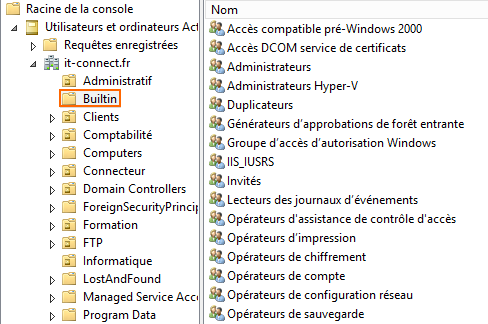
Script d'automatisation PowerShell
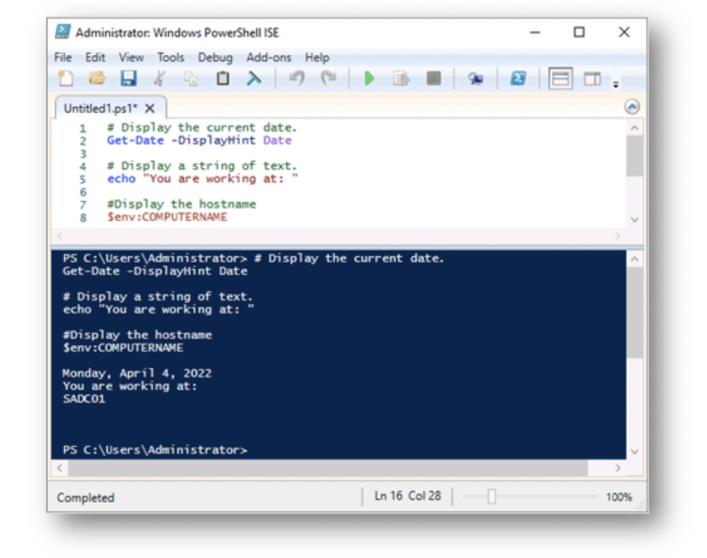
J'ai utilisé l'analyseur de trames Wireshark pour capturer du trafic et diagnostiquer des pannes réseau (boucles de routage, requêtes DHCP sans réponse, conflits IP).
Application d'une méthode « Bottom-Up » (de la couche physique 1 à applicative 7) avec ping, tracert / traceroute et des filtres d'affichage Wireshark.
Pour isoler méthodiquement la cause racine d'un incident réseau et produire un diagnostic précis plutôt que de procéder au hasard.
Interpréter la structure des en-têtes TCP/IP et isoler les trames pertinentes au milieu d'un trafic dense.
L'efficacité des outils de diagnostic en ligne de commande et l'importance d'une démarche par élimination structurée.
Rédiger systématiquement une fiche d'incident structurée (symptôme, diagnostic, résolution) comme dans un outil de ticketing IT.
Traces ciblées :
Analyse de trames sous Wireshark
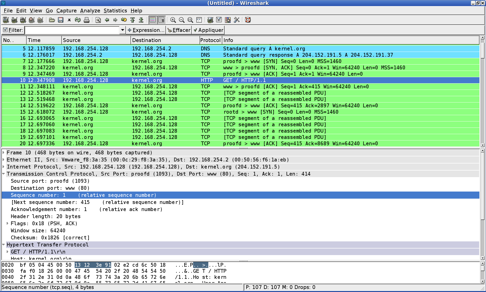
Diagnostic réseau avec tracert
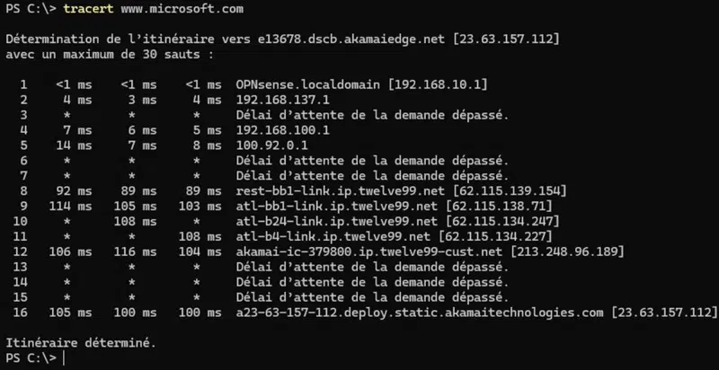
J'ai installé des systèmes d'exploitation clients (Windows 10/11, Ubuntu Linux) sur machines physiques et virtuelles (VirtualBox, VMware) et configuré leur intégration au réseau.
Création de supports bootables avec Rufus, configuration du BIOS/UEFI, partitionnement GPT, installation des pilotes et jonction au domaine Active Directory.
Pour fournir aux utilisateurs un poste de travail opérationnel, sécurisé et correctement connecté aux ressources de l'entreprise.
Comprendre les différences entre schémas de partitionnement MBR et GPT et résoudre les problèmes de pilotes réseau post-installation.
L'importance des étapes de post-installation (mises à jour de sécurité, pare-feu local, logiciels métiers) et de la rédaction d'une procédure claire.
Utiliser des solutions de déploiement réseau automatisé (WDS ou FOG) pour déployer des images standardisées sur plusieurs postes simultanément.
Traces ciblées :
Déploiement d'une VM sous VirtualBox
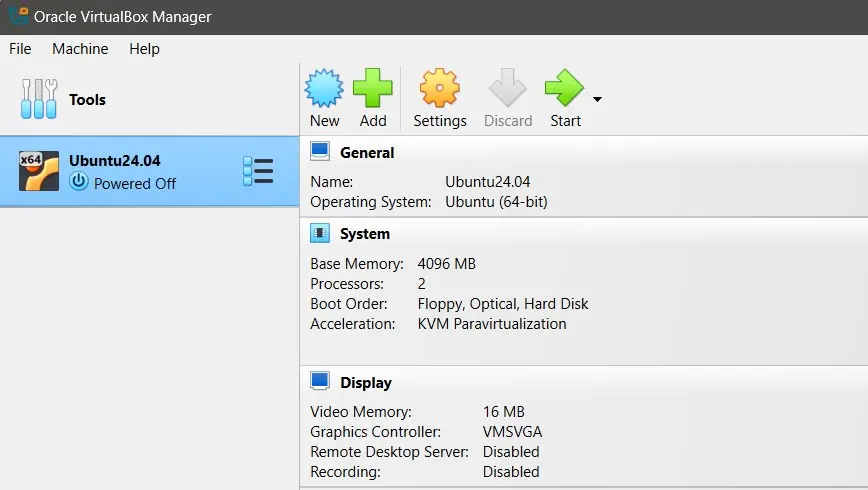
Configuration de l'adressage IP
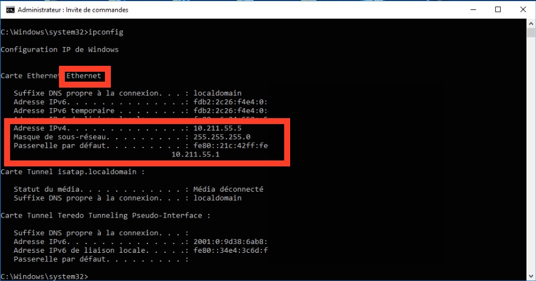
Compétence Connecter — Niveau 1 : Découvrir les transmissions et la ToIP
Mesure de signaux, modélisation, supports de transmission, téléphonie IP et communication
J'ai généré des signaux électriques (carrés, sinusoïdaux) et mesuré leurs caractéristiques temporelles et fréquentielles à l'aide d'oscilloscopes numériques.
Utilisation de générateurs basses fréquences (GBF), réglage de la base de temps et du déclenchement (trigger) sur l'oscilloscope, et calcul des périodes, fréquences et amplitudes.
Parce que toute communication réseau repose sur la propagation de signaux physiques sujets au bruit et à l'atténuation.
Stabiliser des signaux rapides à l'écran via la fonction trigger et convertir rapidement les divisions d'écran en valeurs physiques réelles.
Un signal numérique réel présente des temps de montée et des déformations qui limitent physiquement le débit binaire maximal d'un canal.
Exporter systématiquement les captures numériques sur clé USB depuis l'oscilloscope pour enrichir mes comptes rendus de TP.
Traces ciblées :
Relevé de signal à l'oscilloscope
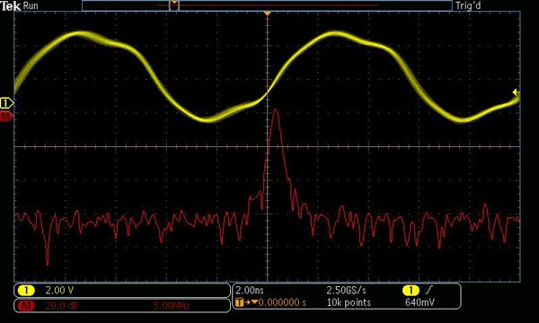
Analyse fréquentielle et spectre
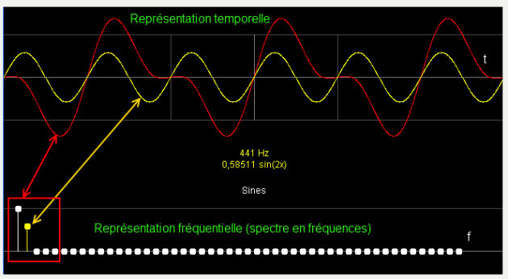
Dans le cadre de la SAÉ 1.03, j'ai modélisé mathématiquement et numériquement une ligne de transmission en cuivre (câble coaxial, paires torsadées) sous LTspice.
Modélisation de tronçons de câble par des cellules élémentaires RLC (Résistance, Inductance, Capacité) et lancement de simulations temporelles et diagrammes de Bode.
Pour prédire l'atténuation et la déformation du signal en fonction de la fréquence et de la distance sans dérouler physiquement des centaines de mètres de câble.
La prise en main de l'interface de LTspice et le lien entre les fonctions de transfert théoriques et les courbes simulées.
La justification physique de la limite de longueur de 100 mètres des câbles Ethernet cuivre avant dégradation critique du signal.
Compléter les simulations LTspice par des scripts Python (Matplotlib) pour tracer des courbes comparatives plus lisibles.
Traces ciblées :
Modélisation de ligne sous LTspice
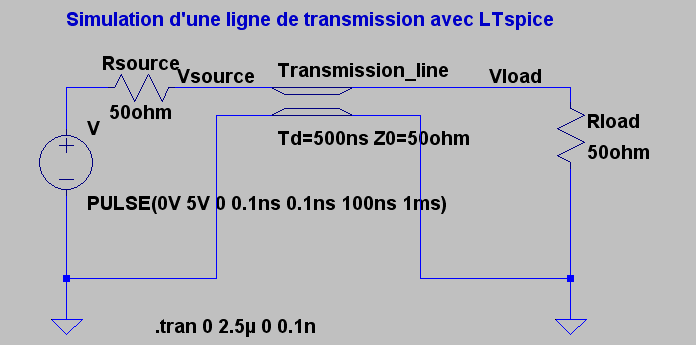
Simulation temporelle / Diagramme de Bode
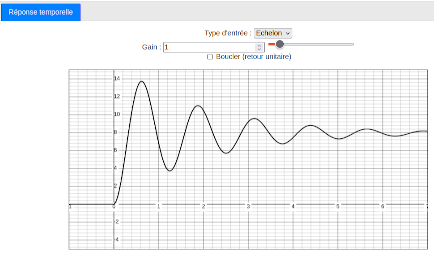
J'ai confectionné des cordons réseau RJ45 (droits et croisés), raccordé des prises murales et brassé les liens jusqu'à la baie informatique.
Dénudage et sertissage de câbles UTP/STP selon la norme de câblage T568B, suivi d'une validation avec un testeur de continuité et de paires.
Un câblage défectueux provoque des pertes de paquets intermittentes et des chutes de débit difficiles à diagnostiquer aux couches supérieures.
Maintenir les 8 brins de cuivre parfaitement alignés dans l'ordre T568B lors de l'insertion dans le connecteur RJ45 avant sertissage.
La rigueur manuelle nécessaire au câblage structuré et le rôle du blindage (STP/FTP) contre les perturbations électromagnétiques.
Réaliser des tests de qualification avancés (paradiaphonie NEXT, atténuation) avec un certificateur de câblage.
Traces ciblées :
Norme de câblage T568B
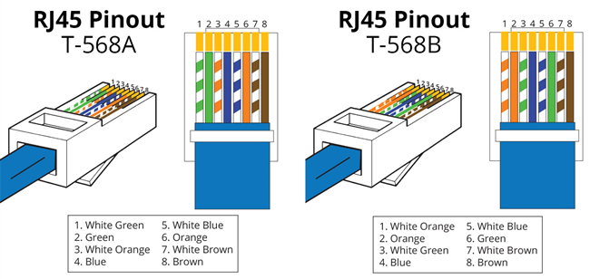
Validation avec testeur de continuité
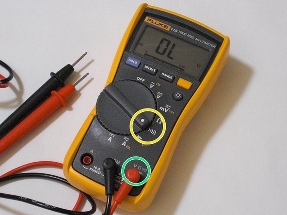
J'ai déployé un serveur IPBX sous Asterisk (Linux Alpine), configuré des téléphones IP Fanvil et Cisco en auto-provisioning et paramétré le plan de numérotation (Dialplan, messagerie, SVI).
Configuration des fichiers pjsip.conf et extensions.conf sous Asterisk, et déploiement d'un serveur TFTP distribuant les fichiers XML (SEP<MAC>.cnf.xml) aux postes Cisco.
Pour mettre en place une solution de téléphonie sur IP interopérable entre différents constructeurs grâce au standard SIP.
La syntaxe stricte des fichiers de configuration Asterisk et la rigueur requise sur les adresses MAC des fichiers d'auto-provisioning.
La séparation entre signalisation (SIP sur UDP 5060) et transport de la voix (flux RTP), ainsi que le gain de temps de l'auto-provisioning.
Développer un script Python lisant un fichier CSV (MAC et numéros internes) pour générer automatiquement les profils XML.
Traces ciblées :
Configuration du Dialplan Asterisk
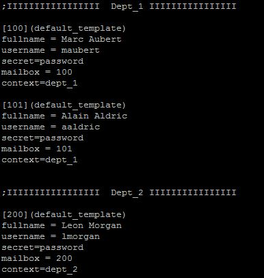
Provisioning de téléphone IP
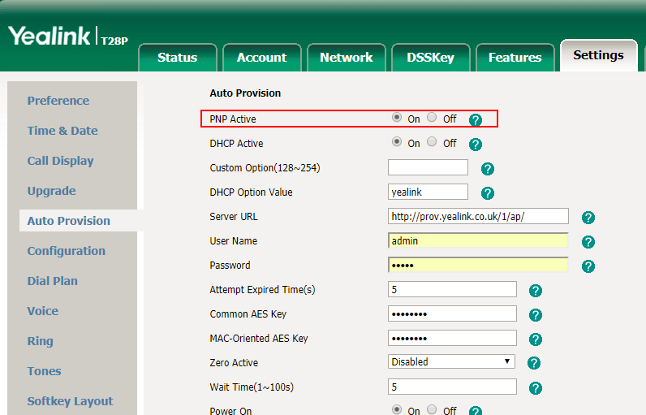
J'ai rédigé des rapports techniques pour chaque SAÉ, conçu des supports visuels et soutenu mes réalisations à l'oral en français et en anglais.
Structuration claire des dossiers (contexte, méthodologie, résultats, bilan), création de schémas d'architecture synthétiques et préparation des soutenances chronométrées.
Un spécialiste R&T doit savoir vulgariser ses choix techniques auprès d'un décideur non expert tout en restant précis face à un jury technique.
Synthétiser plusieurs semaines de travail technique dans le temps imparti sans perdre l'auditoire dans des détails de syntaxe.
Un schéma d'architecture clair est bien plus parlant qu'un long bloc de texte, et l'adaptation du registre de langage est clé.
Effectuer systématiquement une répétition enregistrée avant chaque soutenance pour optimiser la gestion du temps.
Traces ciblées :
Support de présentation de projet
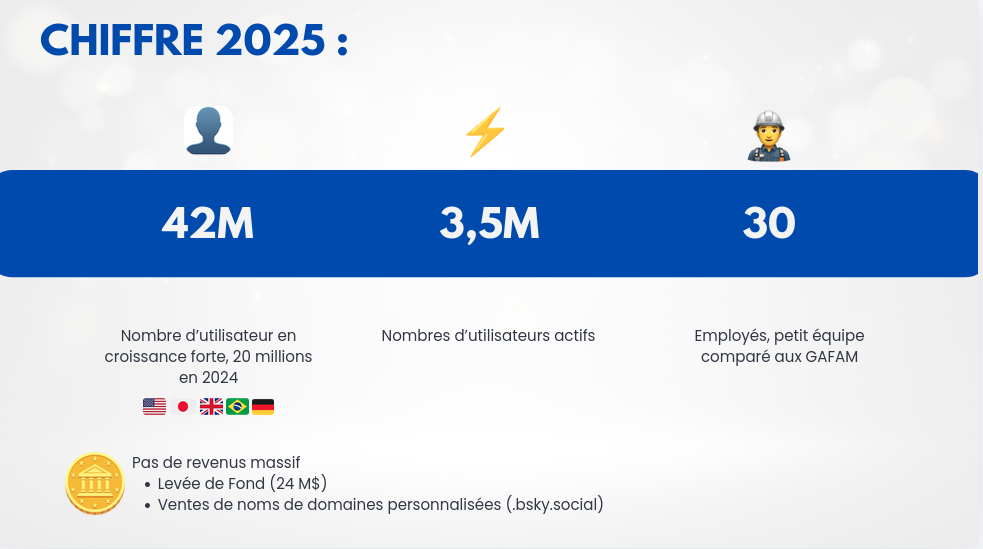
Extrait de compte-rendu technique
Compétence Programmer — Niveau 1 : S'intégrer dans un service informatique
Outils système Linux, débogage, algorithmique Python, technologies Web, données et travail collaboratif Git
J'ai administré des systèmes Linux (Debian/Ubuntu) en ligne de commande (CLI) : gestion de l'arborescence, des permissions (chmod, chown) et des paquets logiciels.
Connexion en SSH et utilisation quotidienne des commandes Bash (ls, grep, awk, tar, nano, vim) et du gestionnaire apt.
La majorité des serveurs et équipements réseaux fonctionnent sous Unix/Linux sans interface graphique ; la maîtrise du shell est indispensable.
Retenir les options des commandes système et s'habituer à l'éditeur en mode texte vim.
La rapidité et la puissance du terminal par rapport à une interface graphique, ainsi que l'exploitation des pages de manuel (man).
Construire un pense-bête numérique (cheat sheet) dès les premières séances pour centraliser les commandes clés.
Traces ciblées :
Navigation et gestion des droits en CLI
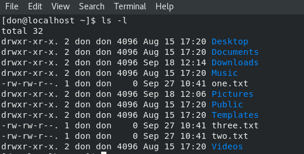
Édition de fichier système via Nano/Vim
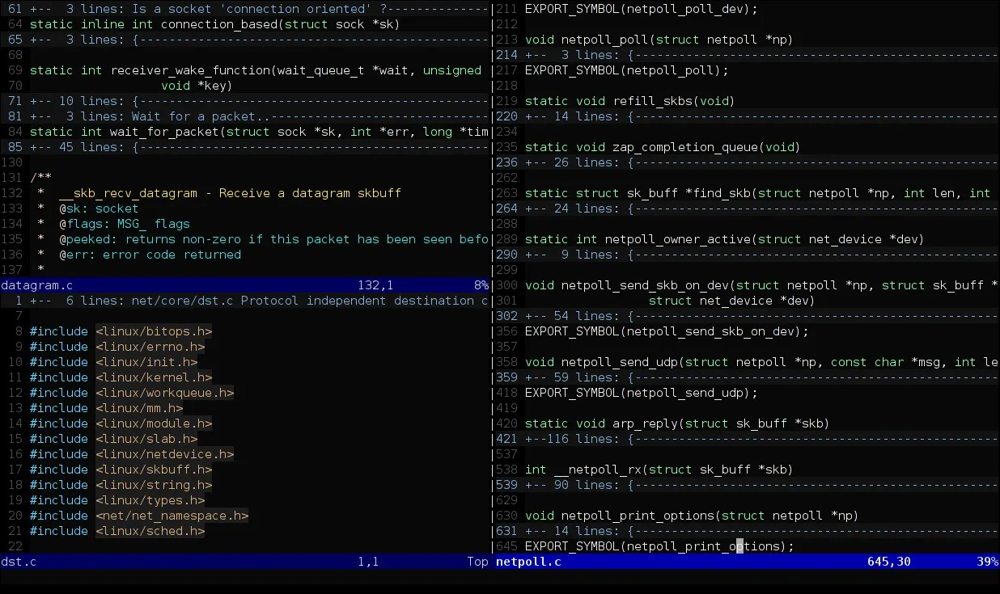
J'ai analysé des programmes Python existants comportant des bugs de syntaxe ou de logique afin d'en comprendre le fonctionnement et de les corriger.
Utilisation du débogueur de Visual Studio Code avec pose de points d'arrêt (breakpoints) et exécution pas à pas pour observer l'état des variables.
En milieu professionnel, la maintenance et l'évolution de scripts existants occupent une part majeure du travail technique.
Comprendre la logique d'un code peu commenté et repérer les erreurs de typage dynamique en Python.
Savoir lire un traceback Python pour remonter immédiatement à la ligne et à la cause exacte d'une exception.
Activer un linter comme Flake8 ou Pylint dans VS Code pour détecter les anomalies avant même l'exécution.
Traces ciblées :
Utilisation de breakpoints sur VS Code
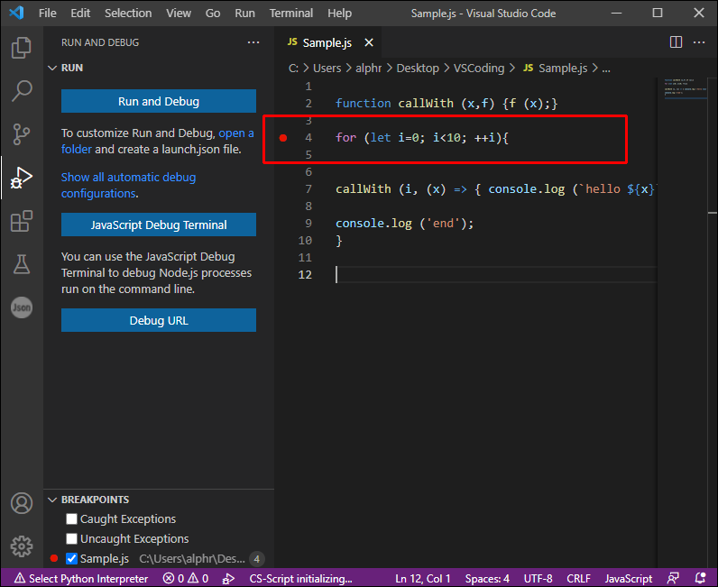
Résolution d'erreurs d'exécution
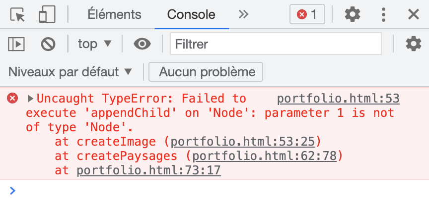
J'ai conçu des algorithmes (recherche, tri, traitement de listes et dictionnaires) en pseudo-code avant de les implémenter en Python.
Découpage du problème sur papier sous forme de logigrammes, puis écriture de fonctions modulaires utilisant des boucles (for, while) et structures conditionnelles.
Pour dissocier la résolution logique du problème des contraintes syntaxiques du langage de programmation.
Maîtriser les conditions d'arrêt des boucles while et manipuler les index dans les structures de données imbriquées.
La phase de conception sur papier réduit considérablement le temps de débogage lors du codage.
Écrire systématiquement des jeux de tests unitaires (assertions) pour valider les cas limites de chaque fonction.
Traces ciblées :
Conception d'algorithme (Logigramme)
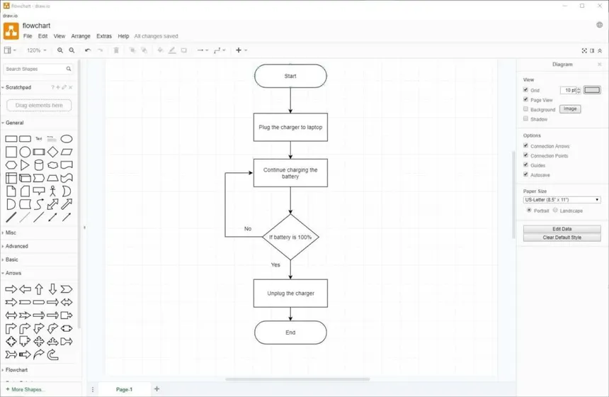
Traduction en langage Python
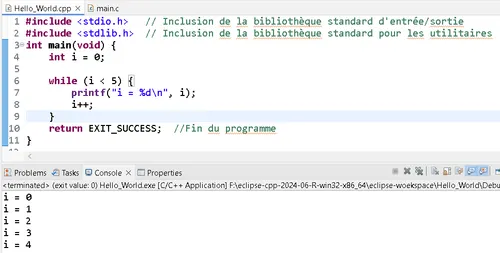
J'ai conçu, développé et mis en ligne ce site portfolio personnel complet en gérant l'arborescence des pages et l'adaptation multi-écrans.
Structuration sémantique en HTML5, mise en forme en CSS3 avec Bootstrap 5 pour la responsivité mobile, et déploiement continu via GitHub Pages.
Pour maîtriser les bases du développement Web client/serveur et disposer d'un support réflexif professionnel pour mon parcours R&T.
Le positionnement précis des éléments avec Flexbox/Grid CSS et l'adaptation de la barre de navigation sur smartphones.
La séparation nette entre structure (HTML), présentation (CSS) et comportement dynamique (JavaScript), ainsi que le Mobile First.
Enrichir l'interactivité JavaScript (filtres dynamiques, recherche instantanée) comme je l'ai fait dans cette version BUT 2.
Traces ciblées :
Structure HTML et stylisation CSS
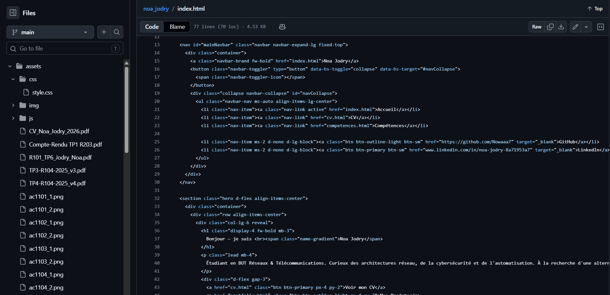
Adaptation Mobile First (Responsive)
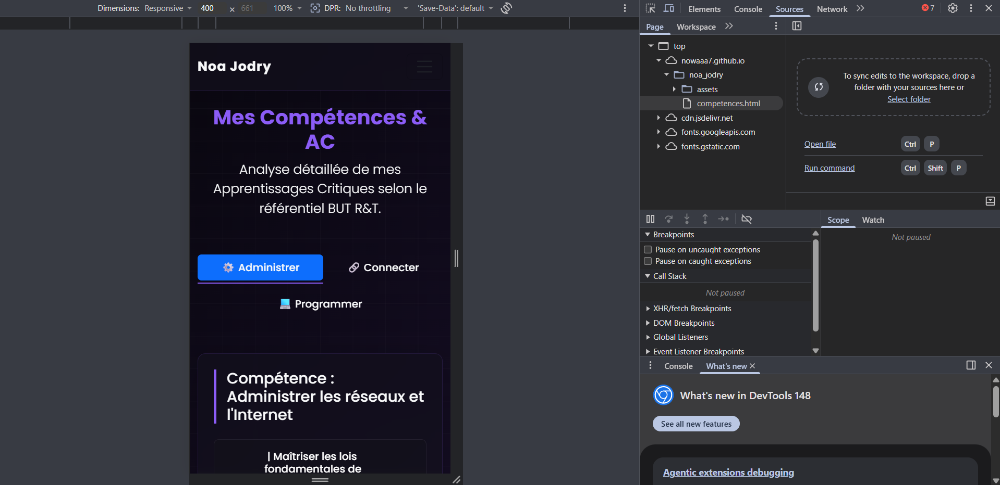
Lors de la SAÉ 1.05, j'ai développé un programme modulaire Python exploitant un jeu de données Open Data (clubs-data-2023.csv) pour en extraire des statistiques et générer des graphiques ASCII.
Lecture via le module csv, indexation des données en mémoire à l'aide de dictionnaires et listes Python pour un accès rapide par clé, puis export des résultats.
Pour automatiser l'analyse de gros volumes de données structurées en choisissant des structures de données performantes.
Gérer les particularités d'encodage UTF-8 et les séparateurs internes des fichiers CSV réels.
L'impact du choix de la structure de données (dictionnaire vs liste) sur la complexité et la vitesse d'exécution d'un traitement.
Utiliser la bibliothèque Pandas pour manipuler des jeux de données volumineux encore plus efficacement.
Traces ciblées :
Traitement de données CSV et génération de graphiques ASCII
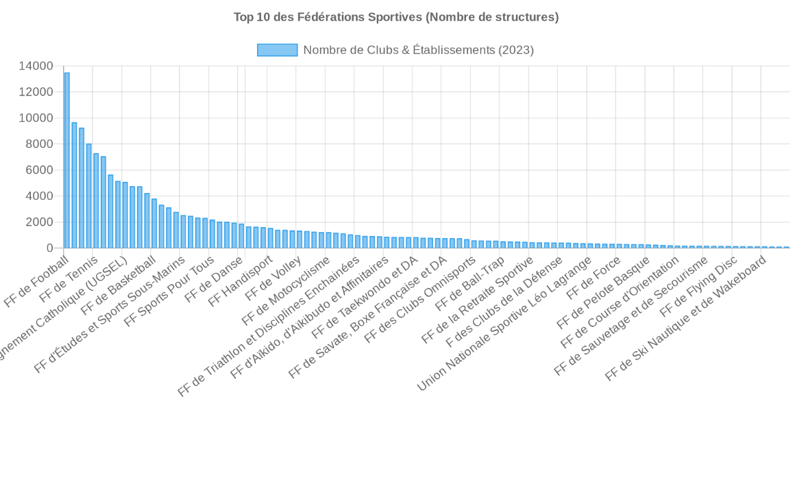
J'ai développé en équipe un projet Python découpé en modules (main.py, make_chart.py, create_ascii_chart.py) hébergé et versionné sur GitLab.
Utilisation quotidienne des commandes Git (clone, branch, commit, push, pull, merge) et répartition des modules entre les membres du groupe.
Pour travailler simultanément sur un même projet logiciel sans écraser le code des autres collaborateurs et conserver un historique complet.
La résolution des conflits de fusion (merge conflicts) lorsque deux équipiers modifiaient simultanément le fichier principal.
L'importance d'une architecture modulaire et de commits atomiques bien documentés pour fluidifier le travail d'équipe.
Adopter dès le départ la convention « Conventional Commits » et systématiser les Merge Requests avec relecture.
Traces ciblées :
Historique collaboratif et gestion de branches sous Git
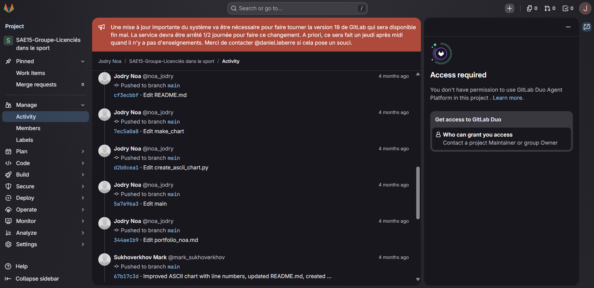